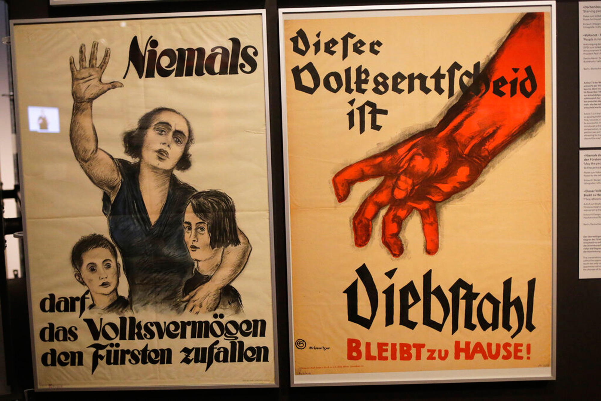

Die Geschichte von Deutschland

Die Anfänge
Deutschland hat eine lange und vielschichtige Geschichte, die bis in das 10. Jahrhundert zurückreicht. Die ersten Siedlungen entstanden in der Zeit der Völkerwanderung.
Die Kaiserzeit
Im 12. Jahrhundert wurde das Heilige Römische Reich Deutscher Nation gegründet, das bis ins 19. Jahrhundert hinein bestand. Die Kaiserzeit war geprägt von Kriegen und Konflikten.

Die Weimarer Republik
Im 20. Jahrhundert wurde Deutschland zur Weimarer Republik, die von 1919 bis 1933 bestand. Diese Zeit war geprägt von politischen Umwälzungen und wirtschaftlichen Schwierigkeiten.
Die Zeit des Nationalsozialismus
1933 wurde Deutschland von den Nationalsozialisten unter der Führung von Adolf Hitler übernommen. Diese Zeit war geprägt von Repression, Krieg und Verbrechen.